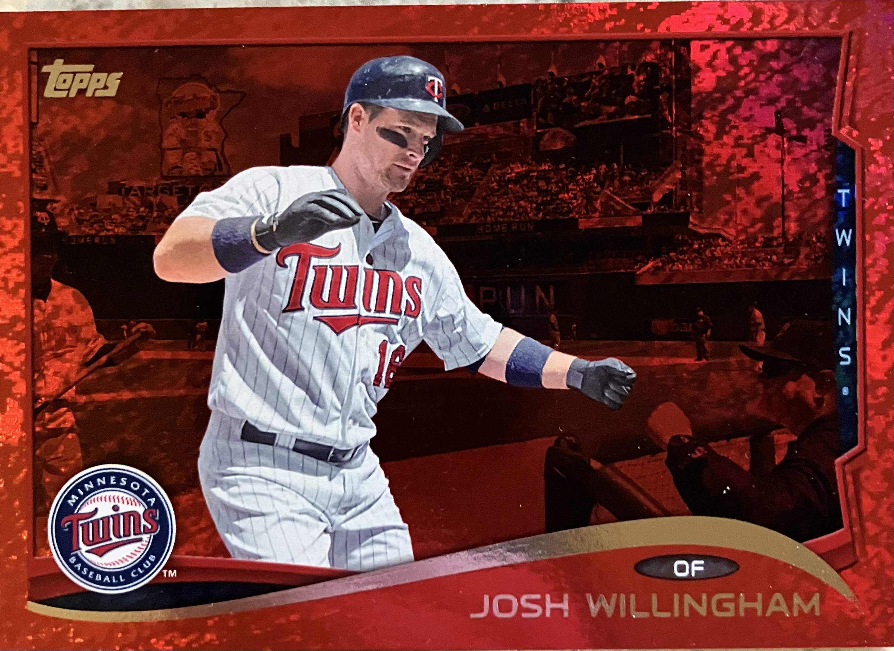

Topps 2014 Series 2: Josh Willingham

Image Credit: u/vintagehotdog13
The Play
June 2, 2013
Seattle Mariners @ Minnesota Twins
Bottom of the 5th
Josh Willingham hits a two-run home run.
There is more anti-evidence than true evidence. The play takes place at Target Field (can see the stadium) was after a home run (can see the text behind Willingham) and most importantly is a day game. According to Statcast, Willingham hit seven home runs at home in 2013 (the most likely season for the photo). Only three were day games: 04/04, 04/27, and 06/02. In the first, the Twins wore their dark colored jerseys and in the second, there was a large shadow on the first base side of the field that is not present on the card. This leaves June 2 as the only possible date of the play.
Card Details
Copyright Year: 2014
Card Series: Topps Series 2
Player Depicted: Josh Willingham
Team: Minnesota Twins
Card Number: 385